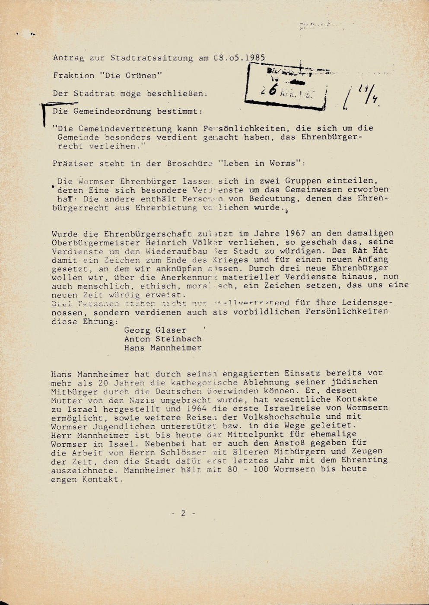
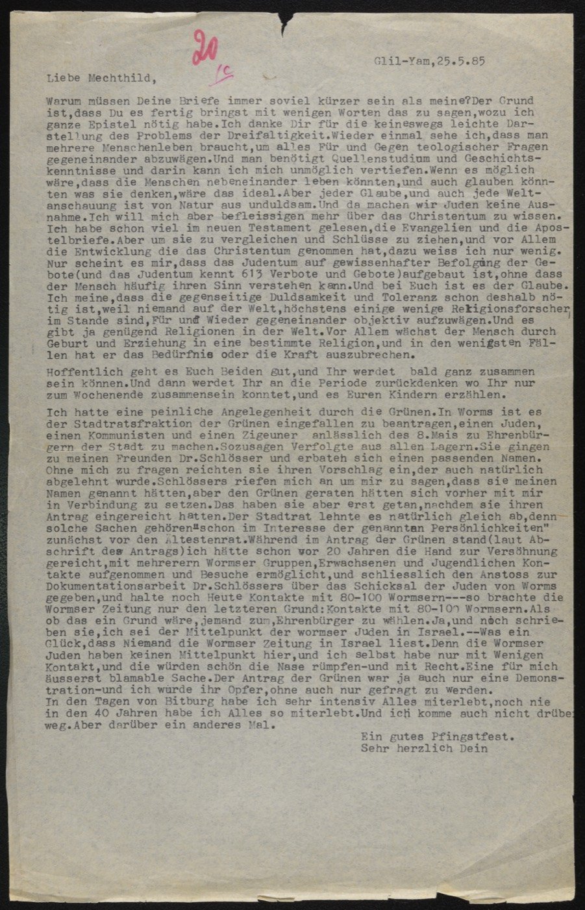

Blatt 1 — p. 26 · Antrag der Grünen
Antrag zur Stadtratssitzung am 13.05.1985 — Fraktion „Die Grünen"
Der Stadtrat möge beschließen: … Die Gemeindeordnung bestimmt: „Die Gemeindevertretung kann Persönlichkeiten, die sich um die Gemeinde besonders verdient gemacht haben, das Ehrenbürgerrecht verleihen."
… Wurde die Ehrenbürgerschaft zuletzt im Jahre 1967 an den damaligen Oberbürgermeister Heinrich Völker verliehen …
Motion to the city-council session of 13 May 1985 by the Green group: that the council confer honorary citizenship. The municipal code allows honouring persons of special merit to the community; the honour was last conferred in 1967.

G-F-0444-3 · p. 26 — Antrag der Grünen, 1985
Blatt 2 — p. 29 · Mannheimer an Mechthild, Glil-Yam 25.5.85
Liebe Mechthild, … Ich hatte eine peinliche Angelegenheit durch die Grünen. In Worms ist es der Stadtratsfraktion der Grünen eingefallen zu beantragen, einen Juden, einen Kommunisten und einen Zigeuner anlässlich des 8. Mais zu Ehrenbürgern der Stadt zu machen. Sozusagen Verfolgte aus allen Lagern. … Ohne mich zu fragen reichten sie ihren Vorschlag ein, der auch natürlich abgelehnt wurde.
Im Antrag stand, ich hätte schon vor 20 Jahren die Hand zur Versöhnung gereicht, mit mehreren Wormser Gruppen Kontakte aufgenommen und Besuche ermöglicht, den Anstoß zur Dokumentationsarbeit Dr. Schlössers über das Schicksal der Juden von Worms gegeben, und halte noch heute Kontakte mit 80–100 Wormsern. … Eine für mich äußerst blamable Sache. … ich wurde ihr Opfer, ohne auch nur gefragt zu werden.
In den Tagen von Bitburg habe ich sehr intensiv alles miterlebt, noch nie in den 40 Jahren habe ich alles so miterlebt. Und ich komme auch nicht darüber weg. … Ein gutes Pfingstfest. Sehr herzlich, Dein —
I had an embarrassing affair through the Greens. The Green council group took it into their heads to propose making a Jew, a communist and a gypsy honorary citizens on the 8th of May — the persecuted from every camp. Without asking me they submitted it, and of course it was rejected. The motion said I had extended my hand to reconciliation 20 years ago, made contact with Worms groups and enabled visits, prompted Dr. Schlösser's documentation of the fate of the Jews of Worms, and still keep contact with 80–100 people of Worms. … A thoroughly humiliating thing … I became their victim, without even being asked. In the days of Bitburg I lived through everything intensely — never in 40 years have I felt it so.

G-F-0444-3 · p. 29 — Mannheimer to Mechthild, Glil-Yam, 25 May 1985